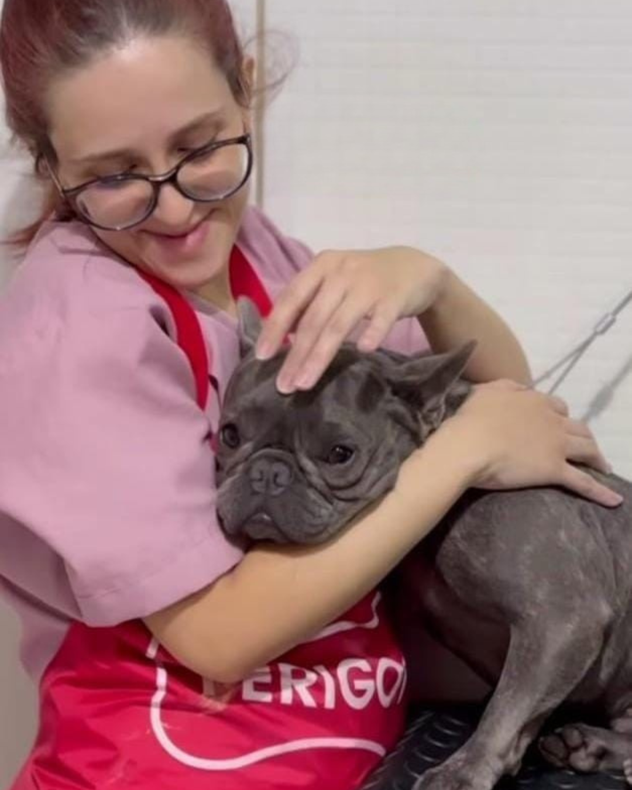

Apaixonada por pets desde sempre, Jéssica é a alma do Sweet Pet. Ela une técnica, carinho e paciência em cada atendimento, garantindo que cada pet receba o melhor cuidado possível.
Formada e constantemente atualizada nas melhores práticas de banho, tosa e bem-estar animal, Jéssica tem um olhar atento para o conforto e a segurança de cada bichinho. Sua missão é fazer com que todos os pets saiam não apenas limpos e cheirosos, mas também felizes e relaxados.
Quem conhece o trabalho da Jéssica sabe: ela trata cada animalzinho como se fosse parte da família. ❤️
Informações Adicionais: Nosso serviço de banho e tosa utiliza produtos de linha profissional e hipoalergênicos, garantindo a saúde da pele e do pelo. Além disso, cada tosa é personalizada de acordo com a raça e a preferência do tutor, sempre priorizando o bem-estar e o manejo sem estresse.